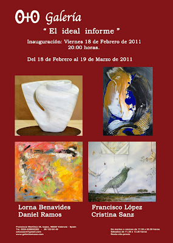

"El ideal informe": Inauguración Viernes 18 de Febrero de 2011
miércoles, 16 de febrero de 2011
{kind=link}

“El ideal informe"
Del 18 de Febrero al 19 de Marzo 2011
Inauguración 18 de Febrero a las 20:00 horas
La Galería O+O de Valencia abre la primavera con la exposición colectiva “El ideal informe” compuesta por una selección de los trabajos de cuatro artistas: Daniel Ramos, Lorna Benavides, Francisco López y Cristina Sanz. La muestra, que reúne pintura y escultura, nos adentra en el surrealismo onírico del pintor cubano Daniel Ramos, en el delicado y pétreo mundo escultórico de Lorna Benavides, en las formas pictóricas de expresionismo abstracto de Francisco López y en la nueva forma de trabajar la abstracción pictórica de Cristina Sanz.
| VER VÍDEO |
Daniel Ramos (1964, La Habana) ha expuesto en Cuba, España, Italia, México y Venezuela. Actualmente reside y trabaja en Valencia donde tiene su estudio de pintura. Sus obras se encuentran en colecciones privadas de México, Italia, Venezuela, España, Inglaterra, Finlandia y Cuba. El trabajo pictórico de Daniel es fruto de una inspiración surrealista y metafísica, que ilustra a través de imágenes oníricas. La mágica asociación de elementos dispares en sus obras es realizada adoptando una metodología similar a la de la terapia del psicoanálisis. Objetos de funcionamiento simbólico componen un mundo de ensueño que describe en silencio y con misterio los enigmas de la vida. Un viaje utópico que el espectador debe realizar sin prejuicio alguno, para así poder disfrutar de imágenes que sin seguir un razonamiento lógico muestran emociones y sentimientos. Daniel Ramos, licenciado en Bellas Artes, Master en Pintura Mural y Artes Plásticas, nos adentra con sus pinturas en los fenómenos del subconsciente.
La artista costarricense, Lorna Benavides, empezó sus estudios de Bellas Artes en Costa Rica, continua en Madrid y finaliza en Valencia, donde vive en la actualidad. Especialista en Escultura trabaja también el dibujo y la pintura. En su largo currículum cuenta con exposiciones en Madrid, Valencia, Zaragoza y a nivel internacional en Francia y Holanda. Sus esculturas caracterizadas por un alto grado de sensibilidad y creatividad, giran principalmente en torno a la mujer. Serán los torsos femeninos los que la artista esculpa en diferentes tipos de piedra como el mármol de diferentes colores, el alabastro, el onix, etc. Piezas sutiles y delicadas llenas de sensualidad donde las sinuosas líneas que forman sus contornos parecen desvanecerse. Lorna Benavides imprime en su trabajo una fuerza creadora y armonía, que se traduce en sensibles composiciones caracterizadas por formas estilizadas. Esculturas bellas y ligeras que son acariciadas por la luz mientras resbalan por su superficie.
Francisco López, nacido en Zaragoza, fue alumno de Alejandro Cañada durante varios años, mientras ampliaba y completaba su formación artística. Ha realizado múltiples exposiciones colectivas e individuales. Su obra se encuadra en el Expresionismo abstracto, con preferencia por el acrílico como técnica. Una pintura gestual y llena de fuerza que está salpicada de emociones e interpretaciones. El color es el elemento y recurso expresivo más importante de su obra, a partir del cual se generan espacios diversos y formas distintas, que podríamos calificar como “formas informes”. La fuerza del gesto pictórico se conjuga con la expresividad emocional, creando una dinámica continua que atrapa al espectador dentro de la vorágine que presenta. Francisco López elimina en su pintura el carácter narrativo, para en lugar de contar historias en el cuadro, abrir un espacio que permita mostrar su interior a partir de la reflexión ante la propuesta pictórica.
Cristina Sanz (Valencia, 1955) da un paso más en su creación artística y nos trae sus últimos trabajos que muestran una forma radicalmente distinta de trabajar. Si hasta el momento su obra estaba caracterizada por la abstracción geométrica, ahora encontramos una nueva Cristina que se libera de las ataduras rectilíneas, para crear composiciones de manchas. Es como si los límites que encuadraban sus anteriores figuras hubieran estallado dejando un rastro de degradaciones y salpicaduras; en ocasiones podemos ver restos de esas líneas que antes ordenaban geométricamente la composición. La artista valenciana sin embargo sigue siendo fiel al color en sus pinturas, colores intensos y vivos, pero que en esta nueva etapa dejan de ser planos y puros para entremezclarse y mostrar sus diferentes texturas. Las armas siguen siendo las mismas: la abstracción y el color; pero ambas dan un giro expresionista que nutre a su obra de una fuerza y atracción singular. Graduada en Decoración y Arte Publicitario, licenciada en Bellas Artes y Filosofia y Letras, ha expuesto en varias ocasiones en ciudades como Madrid, Valencia, Alicante, Castellón, Pekín, Seúl, Roma, Cortona, etc.
Óscar García García